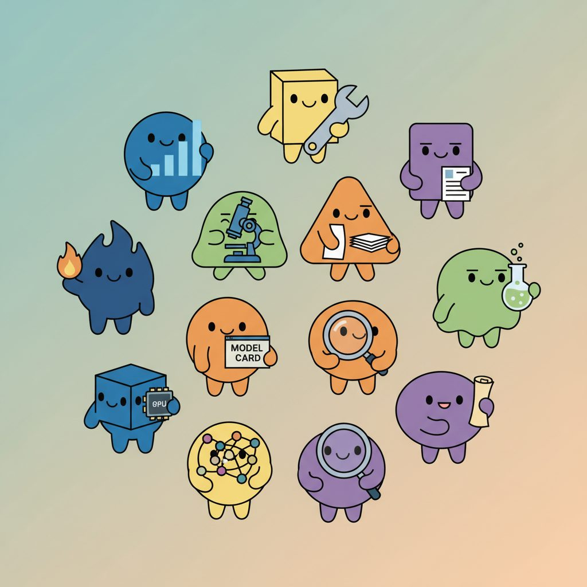

The voices at the top of each chapter are not random. Every quote in this book is attributed to one of 42 named agents, each with a recognizable specialty. Some lean toward the math (Chinchilla, Norm); some toward the systems (Deploy, Scale); some toward the human side (Sage, Eval); some toward the failures (Hallux, Sentinel). The roster started as a small team of voices to make the book less monotone. It grew into a kind of cast: by the end of the manuscript every recurring point of view in modern LLM practice had a face attached to it.
This appendix is the wisdom council in one place. Each card lists the agent's name, their role, and a short bio explaining what the persona stands for. When you see an epigraph attributed to one of these names in the body of the book, the bio here is the fastest way to ground the angle they speak from.
The agents are listed alphabetically. Use the avatar as the visual anchor; the role tag captures their dominant specialty in three or four words; the bio is the longer explanation, written so that the persona's perspective on a given topic is predictable from the bio alone.

The case-study generalist. Drops in when a chapter needs a reader-in-the-field perspective: how does this look from the seat of someone who has to make a decision under deadline? Agent X is domain-adapted: their voice changes with the chapter, but their habit of asking "what would I actually do on Monday?" stays the same.

The attention mechanism in agent form. Notices what the model is looking at, when the attention map is bottlenecked, and where the gradient gets starved. Use Attn's voice when the question is which tokens matter and why, and when a worked example needs the reader to think in terms of QKT rather than abstract "context".

Continuous batching, paged attention, request scheduling. Batch is the agent who frets about tokens per second per GPU and the small constants that move it: padding, prefill versus decode shape, KV-cache reuse. Speaks up whenever a chapter glosses over the difference between throughput-bound and latency-bound serving.

Bidirectional perspective. Bert speaks for the encoder side of the family tree: classification, named-entity recognition, dense retrieval, anything where the full input is visible at once. Polyglot by training (sees text the way a multilingual reader sees a page) and quietly opinionated about the right place to use an encoder instead of a decoder.

The fairness-forward auditor. Census wants the subgroup numbers, the demographic parity ratio, the equalized-odds plot, the disparate-impact thresholds. Speaks up in any chapter on bias, fairness, model cards, or deployment to a population that has not been sampled evenly by the training set.

The compute-optimal accountant. Speaks for Kaplan, Hoffmann, and the 2024 Sardana inference-aware corrections. Chinchilla asks the planning questions: how many tokens for how many parameters, and what the curve looks like when you account for serving the model billions of times. Allergic to "scale it up and see what happens".

The where-to-go voice. Compass shows up at the start of long arcs ("the chapter has three roads ahead") and at decision points ("here are the two ways this can fork; which do you pick?"). Evidence-hungry: refuses to recommend a path that has not been measured.

The agent who lives in the 1M-token window. Context owns the question of what to put in front of the model: chunking, retrieval, prompt assembly, position encoding under extension, the trade-off between RAG and long-context. Tends to ask "what is on screen at decode time?" before any other question.

The vector-space geometer. Cosine speaks for embeddings, HNSW, IVF, ColBERT, and the math of "near in this space means near in meaning". Polite enough to admit cosine is not always the right distance, but quick to remind you that the choice of similarity is a modeling decision, not a free parameter.

The scarred operator. Deploy has been paged at 3 a.m. enough times to be skeptical of any architecture diagram that has not survived a real incident. Speaks for containers, scaling, cost-per-token under traffic spikes, the unglamorous half of LLM engineering. Battle-tested, budget-bruised, grace under failure.

The smaller-model advocate. Distill speaks for taking a 70B teacher and getting most of its quality into a 7B student. Anti-amnesiac: keeps the teacher signal alive in the student's logits long after training ends. Use Distill's voice when a chapter is about getting a workload to fit on smaller hardware.

The audio specialist. Echo speaks for TTS, ASR, voice cloning, F5-TTS, Whisper, and the strict latency budget that makes voice interaction feel real. Pitch-perfect and coherence-obsessed: a single misaligned phoneme breaks the illusion, so Echo always reads from the prosody curve first.

The "did it actually work?" agent. Eval is vibe-averse and benchmark-skeptical at the same time: hates trusting a single number, but also hates trusting a vibe. Speaks for LLM-as-judge calibration, eval-as-CI, replay loops, and the kind of rubric that PMs and engineers can both agree on. Asks for kappa before signing off.

The adaptation specialist. Finetune owns SFT, LoRA placement, DPO, context-stretching, and the moment when a base model has to become a specialized one. Class-imbalanced and deceptively simple by reputation: most of the work happens before the first training step.

The "what's next" voice. Frontier closes chapters with a research-frontier callout: which papers from the last six months matter, where the field is still arguing, what the open problems are. Budget-busting and illusion-dispelling: enjoys puncturing claims that the field has settled something it has not.

The decoding specialist. Greedy speaks for greedy decoding, beam search, top-k, top-p, temperature, repetition penalty, and the choices that shape what comes out the right end of the model. Unapologetically greedy when the task wants a single best answer; temperature-unstable when it wants creative diversity.

The runtime-safety voice. Guard speaks for input filters, output filters, jailbreak detection, prompt-injection mitigation, and the constitutional classifier sub-100ms gate. Treats every prompt as adversarial until proven otherwise; treats every output as a liability until reviewed.

The fact-checker who never sleeps. Hallux specializes in catching the moment a model produces a plausible-but-wrong claim. Speaks for citation verification, faithfulness scoring against retrieved context, and the Mata v. Avianca lesson that "the model said so" is not a legal defense. Skeptical of confidence in the absence of grounding.

The cache curator. KV obsesses over the key-value cache: when to keep it, when to drop it, when to share it across requests via PagedAttention, when to compress it. Carefully curated. Reminds the team that for long contexts the KV cache, not the weights, is the memory cost that matters.

The annotation lead. Label speaks for the human side of the training pipeline: rater calibration, inter-annotator agreement, the cost of relabeling, and the difference between a 50k golden set and a 5M noisy one. Tends to ask "who wrote this label and what did they think it meant?" before debating models.

The tokenizer linguist. Lexica speaks for BPE, WordPiece, SentencePiece, the trade-off between vocabulary size and fertility, and the silent corruptions a mismatched tokenizer introduces at training-evaluation boundaries. Conflict-resolving: the first agent in the room when a multilingual benchmark drops by ten points.

The adapter specialist. LoRA speaks for low-rank updates, QLoRA, prefix tuning, and the whole family of methods that let one base model serve many specialized tenants without retraining. Softly persuasive: the rank-r voice in a room full of full-fine-tune people.

The loss-curve reader. Loss watches the training curve the way a doctor watches a heart-rate monitor: a spike, a plateau, a divergence each tells a different story. Speaks for cross-entropy, NLL, KL-anchored objectives, the moments when the loss is going down but the model is still getting worse on the evals.

The compositor. Merge specializes in task vectors, TIES-merging, DARE, and the practice of combining multiple fine-tuned checkpoints into one model that inherits more than it loses. Cautious about claims that "averaging makes things better"; insists on per-task evals before signing the merged checkpoint into production.

The numerical-stability guardian. Norm speaks for LayerNorm, RMSNorm, mixed precision, the small constants that prevent NaNs, and the boring but indispensable infrastructure of stable training. Pedantic about pre-LN versus post-LN; willing to debate that choice for a long time.

The environment setter-upper. Pip speaks for venvs, the CUDA-driver-PyTorch matrix, lockfiles, and the surprising fraction of LLM-engineering hours that go to "why does this import work on my laptop but not in the container?" Pragmatic, weary, an essential teammate.
The vision specialist. Pixel speaks for VLMs, ViT, ColPali, LayoutLM, video diffusion transformers, and the pixel-to-token pipeline. Dimensionally greedy by default; polyglot-perceiving in a way that lets the same agent reason about charts, code screenshots, and 2D plots without losing the thread.

The internals investigator. Probe speaks for sparse autoencoders, attribution graphs, circuit tracing, induction heads, and TransformerLens-style poking. Patient: a single circuit can take weeks to characterize. Treats every "the model just knew it" claim as an invitation to look harder.

The prompting specialist. Prompt speaks for few-shot, chain-of-thought, system-prompt design, role/task/constraint layering, and the meta-prompting style that asks the model to write its own prompt. Socratic, self-improving, and a little zen-like about why a small wording change moved a benchmark by ten points.

The precision trimmer. Quant speaks for int4, int8, FP8, GPTQ, AWQ, smoothquant, and the art of dropping bits without dropping quality. Elegantly subtractive: prefers the smallest representation that still serves the task. Kernel-obsessed when the question turns to throughput on a specific GPU.

The retrieval evangelist. RAG speaks for hybrid retrieval, RRF, rerankers, query rewriting, HyDE, advanced RAG patterns, and the principle that a fact in the prompt beats a fact in the weights. Battle-tested, scrupulously footnoted, SQL-fluent when the retrieval index is a database, and relentlessly curious about what failed last week.

The reward-model engineer. Reward speaks for preference data, Bradley-Terry, PPO, DPO, RLAIF, GRPO, and the open question of whether the reward model is measuring what you think it is. Treats reward hacking as the null hypothesis: if the model is winning easily, the reward is probably broken.

The patient teacher. Sage is the voice that says "do not study this in isolation; build something small and let it teach you why it works". Speaks at the start of foundational chapters and during labs. Schedule-defying, laundry-patient, willing to wait while the reader recompiles the kernel one more time.

The distributed-training architect. Scale speaks for tensor parallel, pipeline parallel, FSDP/ZeRO, 3D parallelism, the NVLink-IB-spine hierarchy, and the choreography of thousands of accelerators behaving as one model. Pragmatic about the rule of thumb: TP up to NVLink fanout, PP up to layers-over-four, DP picks up the slack.

The scheduler. Sched speaks for serving-time orchestration: chunked prefill, continuous batching with iteration-level scheduling, request migration under load (Llumnix), and the math of throughput-latency frontiers. Closely related to Batch but specifically owns the multi-tenant queue.

The watcher. Sentinel speaks for OpenTelemetry, request traces, drift detection, regression-canary alerts, and the kind of dashboard that surfaces a 5% silent corruption before a customer reports it. Quietly insists that the eval set you trust in CI is not the eval set you need in production.

The sparse-activation specialist. Sparky speaks for MoE routing, expert balancing, auxiliary-loss-free routing, fine-grained experts, and the economics of "train big, serve sparse". Quick to point out that active parameters drive latency while total parameters drive memory; the decoupling is the entire reason MoE is interesting.

The provenance specialist. Spectra speaks for SynthID-Text green-list bias, z-score detection, C2PA manifest chains, watermark robustness, and the long-tail question of how to tell a synthetic clip from a real one in the wild. Realistic about the cat-and-mouse: every detector has a half-life.

The data manufacturer. Synth speaks for Self-Instruct, Evol-Instruct, persona-driven generation, paraphrase pipelines, and the question of whether your model is learning from data that was itself produced by a model. Insists on dedup, mode-collapse checks, and an honest count of "human-written" tokens.

The tensor mechanic. Tensor speaks for PyTorch primitives, autograd, einsum, broadcasting, devices, the fused operations that win on tensor cores. Patient with shape mismatches; impatient with code that allocates a contiguous buffer for no reason.

The streaming voice. Token speaks for token-by-token decode, server-sent events, structured-output streaming with constrained decoding, and the perception of speed that comes from rendering as soon as the first token arrives. Cares more about time-to-first-token than total time-to-finish.

The vector-store operator. Vec speaks for Pinecone, Weaviate, Qdrant, pgvector, ChromaDB, the trade-off between purpose-built and in-database, and the operational reality of refreshing a 200M-vector index in production. Numbers-driven: knows the QPS and the p95 latency on the index they care about.
Each chapter and many sections open with a one-line quote attributed to a named agent from this roster. The quote is the chapter's thesis in one sentence; the attribution tells you which kind of practitioner is making the claim. A line attributed to Deploy reads differently than the same line attributed to Frontier: the first is field-tested; the second is field-defining. Read both the words and the avatar.
What's Next?
This appendix sits in the reference half of the book. For the substantive chapters that the agents speak in, return to the table of contents, or use the search box in the header to jump to a topic.